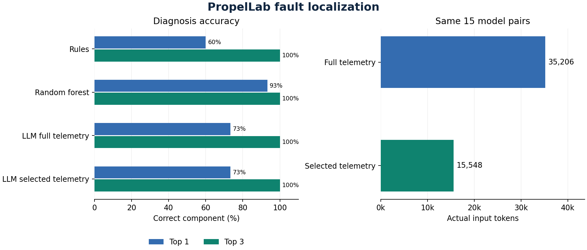

PropelLab validation results
375 software-in-the-loop runs · 322 detected seeded faults

Requirement results by run
| Run | Vehicle | Drive cycle | Seeded component | Result | Checks |
|---|---|---|---|---|---|
| case-e0cff870e4 | ICE | UDDS | healthy | Pass | DVP-01 pass, DVP-02 pass, DVP-03 pass, DVP-04 pass, DVP-06 pass |
| case-5d60a2fb09 | ICE | UDDS | request_filter | Fail | DVP-01 fail, DVP-02 pass, DVP-03 pass, DVP-04 pass, DVP-06 pass |
| case-2430cf5bb4 | ICE | UDDS | torque_allocator | Fail | DVP-01 fail, DVP-02 pass, DVP-03 pass, DVP-04 pass, DVP-06 pass |
| case-e7ac14ca23 | ICE | UDDS | actuator_control | Fail | DVP-01 fail, DVP-02 pass, DVP-03 pass, DVP-04 pass, DVP-06 pass |
| case-49c6f3dcf0 | ICE | UDDS | energy_estimator | Fail | DVP-01 pass, DVP-02 pass, DVP-03 pass, DVP-04 fail, DVP-06 pass |
| case-cc356136ec | ICE | UDDS | temperature_monitor | Fail | DVP-01 pass, DVP-02 fail, DVP-03 pass, DVP-04 pass, DVP-06 pass |
| case-a0a536a200 | ICE | UDDS | thermal_limiter | Fail | DVP-01 pass, DVP-02 pass, DVP-03 fail, DVP-04 pass, DVP-06 pass |
| case-b2bd9e326b | ICE | UDDS | diagnostic_manager | Fail | DVP-01 pass, DVP-02 fail, DVP-03 pass, DVP-04 pass, DVP-06 pass |
| case-17678f838e | ICE | UDDS | healthy | Pass | DVP-01 pass, DVP-02 pass, DVP-03 pass, DVP-04 pass, DVP-06 pass |
| case-92990bffde | ICE | UDDS | request_filter | Fail | DVP-01 fail, DVP-02 pass, DVP-03 pass, DVP-04 pass, DVP-06 pass |
| case-3cd1a48af6 | ICE | UDDS | torque_allocator | Fail | DVP-01 fail, DVP-02 pass, DVP-03 pass, DVP-04 pass, DVP-06 pass |
| case-13b955ebe1 | ICE | UDDS | actuator_control | Fail | DVP-01 fail, DVP-02 pass, DVP-03 pass, DVP-04 pass, DVP-06 pass |
| case-81264bb65d | ICE | UDDS | energy_estimator | Fail | DVP-01 pass, DVP-02 pass, DVP-03 pass, DVP-04 fail, DVP-06 pass |
| case-e67b698df0 | ICE | UDDS | temperature_monitor | Fail | DVP-01 pass, DVP-02 fail, DVP-03 pass, DVP-04 pass, DVP-06 pass |
| case-6a5737a058 | ICE | UDDS | thermal_limiter | Fail | DVP-01 pass, DVP-02 pass, DVP-03 fail, DVP-04 pass, DVP-06 pass |
| case-5005f6f1b4 | ICE | UDDS | diagnostic_manager | Fail | DVP-01 pass, DVP-02 fail, DVP-03 pass, DVP-04 pass, DVP-06 pass |
| case-2111ab50ff | ICE | UDDS | healthy | Pass | DVP-01 pass, DVP-02 pass, DVP-03 pass, DVP-04 pass, DVP-06 pass |
| case-8d93556c21 | ICE | UDDS | request_filter | Fail | DVP-01 fail, DVP-02 pass, DVP-03 pass, DVP-04 pass, DVP-06 pass |
| case-bd55aa84ba | ICE | UDDS | torque_allocator | Fail | DVP-01 fail, DVP-02 pass, DVP-03 pass, DVP-04 pass, DVP-06 pass |
| case-eaf9fa65f0 | ICE | UDDS | actuator_control | Fail | DVP-01 fail, DVP-02 pass, DVP-03 pass, DVP-04 pass, DVP-06 pass |
| case-5541df7a8b | ICE | UDDS | energy_estimator | Fail | DVP-01 pass, DVP-02 pass, DVP-03 pass, DVP-04 fail, DVP-06 pass |
| case-f660ee3ef1 | ICE | UDDS | temperature_monitor | Fail | DVP-01 pass, DVP-02 fail, DVP-03 pass, DVP-04 pass, DVP-06 pass |
| case-cf2e386b9b | ICE | UDDS | thermal_limiter | Fail | DVP-01 pass, DVP-02 pass, DVP-03 fail, DVP-04 pass, DVP-06 pass |
| case-fd6179d9db | ICE | UDDS | diagnostic_manager | Fail | DVP-01 pass, DVP-02 fail, DVP-03 pass, DVP-04 pass, DVP-06 pass |
| case-9fd1e29305 | ICE | UDDS | healthy | Pass | DVP-01 pass, DVP-02 pass, DVP-03 pass, DVP-04 pass, DVP-06 pass |
| case-4c9ab14657 | ICE | UDDS | request_filter | Fail | DVP-01 fail, DVP-02 pass, DVP-03 pass, DVP-04 pass, DVP-06 pass |
| case-122383d47b | ICE | UDDS | torque_allocator | Fail | DVP-01 fail, DVP-02 pass, DVP-03 pass, DVP-04 pass, DVP-06 pass |
| case-2ef4b860b6 | ICE | UDDS | actuator_control | Fail | DVP-01 fail, DVP-02 pass, DVP-03 pass, DVP-04 pass, DVP-06 pass |
| case-b58edfbfa8 | ICE | UDDS | energy_estimator | Fail | DVP-01 pass, DVP-02 pass, DVP-03 pass, DVP-04 fail, DVP-06 pass |
| case-e63b936e6a | ICE | UDDS | temperature_monitor | Fail | DVP-01 pass, DVP-02 fail, DVP-03 pass, DVP-04 pass, DVP-06 pass |
| case-c79887e773 | ICE | UDDS | thermal_limiter | Fail | DVP-01 pass, DVP-02 pass, DVP-03 fail, DVP-04 pass, DVP-06 pass |
| case-804c191bd1 | ICE | UDDS | diagnostic_manager | Fail | DVP-01 pass, DVP-02 fail, DVP-03 pass, DVP-04 pass, DVP-06 pass |
| case-5ad78684db | ICE | UDDS | healthy | Pass | DVP-01 pass, DVP-02 pass, DVP-03 pass, DVP-04 pass, DVP-06 pass |
| case-5e5e97696e | ICE | UDDS | request_filter | Fail | DVP-01 fail, DVP-02 pass, DVP-03 pass, DVP-04 pass, DVP-06 pass |
| case-78593cf710 | ICE | UDDS | torque_allocator | Fail | DVP-01 fail, DVP-02 pass, DVP-03 pass, DVP-04 pass, DVP-06 pass |
| case-d3abc398b0 | ICE | UDDS | actuator_control | Fail | DVP-01 fail, DVP-02 pass, DVP-03 pass, DVP-04 pass, DVP-06 pass |
| case-423852ea45 | ICE | UDDS | energy_estimator | Fail | DVP-01 pass, DVP-02 pass, DVP-03 pass, DVP-04 fail, DVP-06 pass |
| case-2e8c798293 | ICE | UDDS | temperature_monitor | Fail | DVP-01 pass, DVP-02 fail, DVP-03 pass, DVP-04 pass, DVP-06 pass |
| case-4344a56901 | ICE | UDDS | thermal_limiter | Fail | DVP-01 pass, DVP-02 pass, DVP-03 fail, DVP-04 pass, DVP-06 pass |
| case-fba3821002 | ICE | UDDS | diagnostic_manager | Fail | DVP-01 pass, DVP-02 fail, DVP-03 pass, DVP-04 pass, DVP-06 pass |
| case-085ad12b1d | ICE | HWFET | healthy | Pass | DVP-01 pass, DVP-02 pass, DVP-03 pass, DVP-04 pass, DVP-06 pass |
| case-6832c22266 | ICE | HWFET | request_filter | Fail | DVP-01 fail, DVP-02 pass, DVP-03 pass, DVP-04 pass, DVP-06 pass |
| case-3f4d2a3a04 | ICE | HWFET | torque_allocator | Fail | DVP-01 fail, DVP-02 pass, DVP-03 pass, DVP-04 pass, DVP-06 pass |
| case-8e1fa23116 | ICE | HWFET | actuator_control | Fail | DVP-01 fail, DVP-02 pass, DVP-03 pass, DVP-04 pass, DVP-06 pass |
| case-e404ec0bd2 | ICE | HWFET | energy_estimator | Fail | DVP-01 pass, DVP-02 pass, DVP-03 pass, DVP-04 fail, DVP-06 pass |
| case-6307787a84 | ICE | HWFET | temperature_monitor | Fail | DVP-01 pass, DVP-02 fail, DVP-03 pass, DVP-04 pass, DVP-06 pass |
| case-3cd28dbd28 | ICE | HWFET | thermal_limiter | Fail | DVP-01 pass, DVP-02 pass, DVP-03 fail, DVP-04 pass, DVP-06 pass |
| case-16001a0532 | ICE | HWFET | diagnostic_manager | Fail | DVP-01 pass, DVP-02 fail, DVP-03 pass, DVP-04 pass, DVP-06 pass |
| case-f86fe59dcb | ICE | HWFET | healthy | Pass | DVP-01 pass, DVP-02 pass, DVP-03 pass, DVP-04 pass, DVP-06 pass |
| case-b28d4fe251 | ICE | HWFET | request_filter | Fail | DVP-01 fail, DVP-02 pass, DVP-03 pass, DVP-04 pass, DVP-06 pass |
| case-1eaf02c6d6 | ICE | HWFET | torque_allocator | Fail | DVP-01 fail, DVP-02 pass, DVP-03 pass, DVP-04 pass, DVP-06 pass |
| case-647486e9cd | ICE | HWFET | actuator_control | Fail | DVP-01 fail, DVP-02 pass, DVP-03 pass, DVP-04 pass, DVP-06 pass |
| case-f346de1f8e | ICE | HWFET | energy_estimator | Fail | DVP-01 pass, DVP-02 pass, DVP-03 pass, DVP-04 fail, DVP-06 pass |
| case-f2f3759ab0 | ICE | HWFET | temperature_monitor | Fail | DVP-01 pass, DVP-02 fail, DVP-03 pass, DVP-04 pass, DVP-06 pass |
| case-f3984a0ef7 | ICE | HWFET | thermal_limiter | Fail | DVP-01 pass, DVP-02 pass, DVP-03 fail, DVP-04 pass, DVP-06 pass |
| case-5cbfef33c9 | ICE | HWFET | diagnostic_manager | Fail | DVP-01 pass, DVP-02 fail, DVP-03 pass, DVP-04 pass, DVP-06 pass |
| case-94d1a4c923 | ICE | HWFET | healthy | Pass | DVP-01 pass, DVP-02 pass, DVP-03 pass, DVP-04 pass, DVP-06 pass |
| case-ff0a33ca96 | ICE | HWFET | request_filter | Fail | DVP-01 fail, DVP-02 pass, DVP-03 pass, DVP-04 pass, DVP-06 pass |
| case-ed863e57ea | ICE | HWFET | torque_allocator | Fail | DVP-01 fail, DVP-02 pass, DVP-03 pass, DVP-04 pass, DVP-06 pass |
| case-7194aafedb | ICE | HWFET | actuator_control | Fail | DVP-01 fail, DVP-02 pass, DVP-03 pass, DVP-04 pass, DVP-06 pass |
| case-d4e3e70da8 | ICE | HWFET | energy_estimator | Fail | DVP-01 pass, DVP-02 pass, DVP-03 pass, DVP-04 fail, DVP-06 pass |
| case-8dd12a6e59 | ICE | HWFET | temperature_monitor | Fail | DVP-01 pass, DVP-02 fail, DVP-03 pass, DVP-04 pass, DVP-06 pass |
| case-14688e959c | ICE | HWFET | thermal_limiter | Fail | DVP-01 pass, DVP-02 pass, DVP-03 fail, DVP-04 pass, DVP-06 pass |
| case-63bc12ba54 | ICE | HWFET | diagnostic_manager | Fail | DVP-01 pass, DVP-02 fail, DVP-03 pass, DVP-04 pass, DVP-06 pass |
| case-07747c431d | ICE | HWFET | healthy | Pass | DVP-01 pass, DVP-02 pass, DVP-03 pass, DVP-04 pass, DVP-06 pass |
| case-16bfa600c8 | ICE | HWFET | request_filter | Fail | DVP-01 fail, DVP-02 pass, DVP-03 pass, DVP-04 pass, DVP-06 pass |
| case-187eba9af6 | ICE | HWFET | torque_allocator | Fail | DVP-01 fail, DVP-02 pass, DVP-03 pass, DVP-04 pass, DVP-06 pass |
| case-7633e819cb | ICE | HWFET | actuator_control | Fail | DVP-01 fail, DVP-02 pass, DVP-03 pass, DVP-04 pass, DVP-06 pass |
| case-b0aa91b2aa | ICE | HWFET | energy_estimator | Fail | DVP-01 pass, DVP-02 pass, DVP-03 pass, DVP-04 fail, DVP-06 pass |
| case-54092c8e4b | ICE | HWFET | temperature_monitor | Fail | DVP-01 pass, DVP-02 fail, DVP-03 pass, DVP-04 pass, DVP-06 pass |
| case-1cb298e35f | ICE | HWFET | thermal_limiter | Fail | DVP-01 pass, DVP-02 pass, DVP-03 fail, DVP-04 pass, DVP-06 pass |
| case-289f8748ee | ICE | HWFET | diagnostic_manager | Fail | DVP-01 pass, DVP-02 fail, DVP-03 pass, DVP-04 pass, DVP-06 pass |
| case-9d27d72b97 | ICE | HWFET | healthy | Pass | DVP-01 pass, DVP-02 pass, DVP-03 pass, DVP-04 pass, DVP-06 pass |
| case-a12864e6c3 | ICE | HWFET | request_filter | Fail | DVP-01 fail, DVP-02 pass, DVP-03 pass, DVP-04 pass, DVP-06 pass |
| case-04a66e7043 | ICE | HWFET | torque_allocator | Fail | DVP-01 fail, DVP-02 pass, DVP-03 pass, DVP-04 pass, DVP-06 pass |
| case-00b7db6fb6 | ICE | HWFET | actuator_control | Fail | DVP-01 fail, DVP-02 pass, DVP-03 pass, DVP-04 pass, DVP-06 pass |
| case-920e7b3228 | ICE | HWFET | energy_estimator | Fail | DVP-01 pass, DVP-02 pass, DVP-03 pass, DVP-04 fail, DVP-06 pass |
| case-00b8a08d9f | ICE | HWFET | temperature_monitor | Fail | DVP-01 pass, DVP-02 fail, DVP-03 pass, DVP-04 pass, DVP-06 pass |
| case-0e468ca176 | ICE | HWFET | thermal_limiter | Fail | DVP-01 pass, DVP-02 pass, DVP-03 fail, DVP-04 pass, DVP-06 pass |
| case-83581d970f | ICE | HWFET | diagnostic_manager | Fail | DVP-01 pass, DVP-02 fail, DVP-03 pass, DVP-04 pass, DVP-06 pass |
| case-e7fd6ed0e3 | ICE | US06 | healthy | Pass | DVP-01 pass, DVP-02 pass, DVP-03 pass, DVP-04 pass, DVP-06 pass |
| case-52c1f0f6a9 | ICE | US06 | request_filter | Fail | DVP-01 fail, DVP-02 pass, DVP-03 pass, DVP-04 pass, DVP-06 pass |
| case-2714d9d058 | ICE | US06 | torque_allocator | Fail | DVP-01 fail, DVP-02 pass, DVP-03 pass, DVP-04 pass, DVP-06 pass |
| case-34fa210fc2 | ICE | US06 | actuator_control | Fail | DVP-01 fail, DVP-02 pass, DVP-03 pass, DVP-04 pass, DVP-06 pass |
| case-ee153b8f1f | ICE | US06 | energy_estimator | Fail | DVP-01 pass, DVP-02 pass, DVP-03 pass, DVP-04 fail, DVP-06 pass |
| case-1718e11537 | ICE | US06 | temperature_monitor | Fail | DVP-01 pass, DVP-02 fail, DVP-03 pass, DVP-04 pass, DVP-06 pass |
| case-248db5e7bc | ICE | US06 | thermal_limiter | Fail | DVP-01 pass, DVP-02 pass, DVP-03 fail, DVP-04 pass, DVP-06 pass |
| case-1d97ca3feb | ICE | US06 | diagnostic_manager | Fail | DVP-01 pass, DVP-02 fail, DVP-03 pass, DVP-04 pass, DVP-06 pass |
| case-6150da2627 | ICE | US06 | healthy | Pass | DVP-01 pass, DVP-02 pass, DVP-03 pass, DVP-04 pass, DVP-06 pass |
| case-e5a43ed5f2 | ICE | US06 | request_filter | Fail | DVP-01 fail, DVP-02 pass, DVP-03 pass, DVP-04 pass, DVP-06 pass |
| case-0a8e210590 | ICE | US06 | torque_allocator | Fail | DVP-01 fail, DVP-02 pass, DVP-03 pass, DVP-04 pass, DVP-06 pass |
| case-1674a9c1d3 | ICE | US06 | actuator_control | Fail | DVP-01 fail, DVP-02 pass, DVP-03 pass, DVP-04 pass, DVP-06 pass |
| case-fa2a825d15 | ICE | US06 | energy_estimator | Fail | DVP-01 pass, DVP-02 pass, DVP-03 pass, DVP-04 fail, DVP-06 pass |
| case-199d1dbb0f | ICE | US06 | temperature_monitor | Fail | DVP-01 pass, DVP-02 fail, DVP-03 pass, DVP-04 pass, DVP-06 pass |
| case-52c5f98de8 | ICE | US06 | thermal_limiter | Fail | DVP-01 pass, DVP-02 pass, DVP-03 fail, DVP-04 pass, DVP-06 pass |
| case-d144bee1ce | ICE | US06 | diagnostic_manager | Fail | DVP-01 pass, DVP-02 fail, DVP-03 pass, DVP-04 pass, DVP-06 pass |
| case-7ea0c03fde | ICE | US06 | healthy | Pass | DVP-01 pass, DVP-02 pass, DVP-03 pass, DVP-04 pass, DVP-06 pass |
| case-76b8daf074 | ICE | US06 | request_filter | Fail | DVP-01 fail, DVP-02 pass, DVP-03 pass, DVP-04 pass, DVP-06 pass |
| case-3a6ab24dd1 | ICE | US06 | torque_allocator | Fail | DVP-01 fail, DVP-02 pass, DVP-03 pass, DVP-04 pass, DVP-06 pass |
| case-76ec10ef23 | ICE | US06 | actuator_control | Fail | DVP-01 fail, DVP-02 pass, DVP-03 pass, DVP-04 pass, DVP-06 pass |
| case-c19cdf0917 | ICE | US06 | energy_estimator | Fail | DVP-01 pass, DVP-02 pass, DVP-03 pass, DVP-04 fail, DVP-06 pass |
| case-ddef92c4a3 | ICE | US06 | temperature_monitor | Fail | DVP-01 pass, DVP-02 fail, DVP-03 pass, DVP-04 pass, DVP-06 pass |
| case-59330a26bc | ICE | US06 | thermal_limiter | Fail | DVP-01 pass, DVP-02 pass, DVP-03 fail, DVP-04 pass, DVP-06 pass |
| case-202bcd1fcf | ICE | US06 | diagnostic_manager | Fail | DVP-01 pass, DVP-02 fail, DVP-03 pass, DVP-04 pass, DVP-06 pass |
| case-d90cc7bc15 | ICE | US06 | healthy | Pass | DVP-01 pass, DVP-02 pass, DVP-03 pass, DVP-04 pass, DVP-06 pass |
| case-24d795e8aa | ICE | US06 | request_filter | Fail | DVP-01 fail, DVP-02 pass, DVP-03 pass, DVP-04 pass, DVP-06 pass |
| case-9b8882f1d7 | ICE | US06 | torque_allocator | Fail | DVP-01 fail, DVP-02 pass, DVP-03 pass, DVP-04 pass, DVP-06 pass |
| case-26c4ea9902 | ICE | US06 | actuator_control | Fail | DVP-01 fail, DVP-02 pass, DVP-03 pass, DVP-04 pass, DVP-06 pass |
| case-2bbeb3ea6e | ICE | US06 | energy_estimator | Fail | DVP-01 pass, DVP-02 pass, DVP-03 pass, DVP-04 fail, DVP-06 pass |
| case-78d37c613a | ICE | US06 | temperature_monitor | Fail | DVP-01 pass, DVP-02 fail, DVP-03 pass, DVP-04 pass, DVP-06 pass |
| case-c028cd7666 | ICE | US06 | thermal_limiter | Fail | DVP-01 pass, DVP-02 pass, DVP-03 fail, DVP-04 pass, DVP-06 pass |
| case-84929f134e | ICE | US06 | diagnostic_manager | Fail | DVP-01 pass, DVP-02 fail, DVP-03 pass, DVP-04 pass, DVP-06 pass |
| case-9950d01aca | ICE | US06 | healthy | Pass | DVP-01 pass, DVP-02 pass, DVP-03 pass, DVP-04 pass, DVP-06 pass |
| case-7e8eb8a45a | ICE | US06 | request_filter | Fail | DVP-01 fail, DVP-02 pass, DVP-03 pass, DVP-04 pass, DVP-06 pass |
| case-c0e3887a09 | ICE | US06 | torque_allocator | Fail | DVP-01 fail, DVP-02 pass, DVP-03 pass, DVP-04 pass, DVP-06 pass |
| case-fd92cc3be4 | ICE | US06 | actuator_control | Fail | DVP-01 fail, DVP-02 pass, DVP-03 pass, DVP-04 pass, DVP-06 pass |
| case-9d38463b8b | ICE | US06 | energy_estimator | Fail | DVP-01 pass, DVP-02 pass, DVP-03 pass, DVP-04 fail, DVP-06 pass |
| case-74b5e37eab | ICE | US06 | temperature_monitor | Fail | DVP-01 pass, DVP-02 fail, DVP-03 pass, DVP-04 pass, DVP-06 pass |
| case-3cf592a7e8 | ICE | US06 | thermal_limiter | Fail | DVP-01 pass, DVP-02 pass, DVP-03 fail, DVP-04 pass, DVP-06 pass |
| case-1c3660ecf7 | ICE | US06 | diagnostic_manager | Fail | DVP-01 pass, DVP-02 fail, DVP-03 pass, DVP-04 pass, DVP-06 pass |
| case-c14199a467 | BEV | UDDS | healthy | Pass | DVP-01 pass, DVP-02 pass, DVP-03 pass, DVP-04 pass, DVP-06 pass |
| case-7828b8f422 | BEV | UDDS | request_filter | Fail | DVP-01 fail, DVP-02 pass, DVP-03 pass, DVP-04 pass, DVP-06 pass |
| case-7d1c20ec3d | BEV | UDDS | torque_allocator | Fail | DVP-01 fail, DVP-02 pass, DVP-03 pass, DVP-04 pass, DVP-06 pass |
| case-67eb9f8a52 | BEV | UDDS | actuator_control | Fail | DVP-01 fail, DVP-02 pass, DVP-03 pass, DVP-04 pass, DVP-06 pass |
| case-e1d2b848a2 | BEV | UDDS | energy_estimator | Fail | DVP-01 pass, DVP-02 pass, DVP-03 pass, DVP-04 fail, DVP-06 pass |
| case-ee2f582b56 | BEV | UDDS | temperature_monitor | Fail | DVP-01 pass, DVP-02 fail, DVP-03 pass, DVP-04 pass, DVP-06 pass |
| case-6156bc503a | BEV | UDDS | thermal_limiter | Fail | DVP-01 pass, DVP-02 pass, DVP-03 fail, DVP-04 pass, DVP-06 pass |
| case-7611641a6d | BEV | UDDS | diagnostic_manager | Fail | DVP-01 pass, DVP-02 fail, DVP-03 pass, DVP-04 pass, DVP-06 pass |
| case-a1702229e6 | BEV | UDDS | healthy | Pass | DVP-01 pass, DVP-02 pass, DVP-03 pass, DVP-04 pass, DVP-06 pass |
| case-c44a63a59c | BEV | UDDS | request_filter | Fail | DVP-01 fail, DVP-02 pass, DVP-03 pass, DVP-04 pass, DVP-06 pass |
| case-c471a1bf09 | BEV | UDDS | torque_allocator | Fail | DVP-01 fail, DVP-02 pass, DVP-03 pass, DVP-04 pass, DVP-06 pass |
| case-1aa6cd23fa | BEV | UDDS | actuator_control | Fail | DVP-01 fail, DVP-02 pass, DVP-03 pass, DVP-04 pass, DVP-06 pass |
| case-9cf0149922 | BEV | UDDS | energy_estimator | Fail | DVP-01 pass, DVP-02 pass, DVP-03 pass, DVP-04 fail, DVP-06 pass |
| case-0eab51b3ef | BEV | UDDS | temperature_monitor | Fail | DVP-01 pass, DVP-02 fail, DVP-03 pass, DVP-04 pass, DVP-06 pass |
| case-85dbb9a0d8 | BEV | UDDS | thermal_limiter | Fail | DVP-01 pass, DVP-02 pass, DVP-03 fail, DVP-04 pass, DVP-06 pass |
| case-a44cb83843 | BEV | UDDS | diagnostic_manager | Fail | DVP-01 pass, DVP-02 fail, DVP-03 pass, DVP-04 pass, DVP-06 pass |
| case-66f53e7652 | BEV | UDDS | healthy | Pass | DVP-01 pass, DVP-02 pass, DVP-03 pass, DVP-04 pass, DVP-06 pass |
| case-081e8faecc | BEV | UDDS | request_filter | Fail | DVP-01 fail, DVP-02 pass, DVP-03 pass, DVP-04 pass, DVP-06 pass |
| case-57b0bba17f | BEV | UDDS | torque_allocator | Fail | DVP-01 fail, DVP-02 pass, DVP-03 pass, DVP-04 pass, DVP-06 pass |
| case-50aa095406 | BEV | UDDS | actuator_control | Fail | DVP-01 fail, DVP-02 pass, DVP-03 pass, DVP-04 pass, DVP-06 pass |
| case-c6bbce6bd2 | BEV | UDDS | energy_estimator | Fail | DVP-01 pass, DVP-02 pass, DVP-03 pass, DVP-04 fail, DVP-06 pass |
| case-13bbf7abbf | BEV | UDDS | temperature_monitor | Fail | DVP-01 pass, DVP-02 fail, DVP-03 pass, DVP-04 pass, DVP-06 pass |
| case-ad0b59e61c | BEV | UDDS | thermal_limiter | Fail | DVP-01 pass, DVP-02 pass, DVP-03 fail, DVP-04 pass, DVP-06 pass |
| case-bfe885df3c | BEV | UDDS | diagnostic_manager | Fail | DVP-01 pass, DVP-02 fail, DVP-03 pass, DVP-04 pass, DVP-06 pass |
| case-603aab7897 | BEV | UDDS | healthy | Pass | DVP-01 pass, DVP-02 pass, DVP-03 pass, DVP-04 pass, DVP-06 pass |
| case-72f77025ee | BEV | UDDS | request_filter | Fail | DVP-01 fail, DVP-02 pass, DVP-03 pass, DVP-04 pass, DVP-06 pass |
| case-8f768fc7d7 | BEV | UDDS | torque_allocator | Fail | DVP-01 fail, DVP-02 pass, DVP-03 pass, DVP-04 pass, DVP-06 pass |
| case-94600911af | BEV | UDDS | actuator_control | Fail | DVP-01 fail, DVP-02 pass, DVP-03 pass, DVP-04 pass, DVP-06 pass |
| case-7a7d22622e | BEV | UDDS | energy_estimator | Fail | DVP-01 pass, DVP-02 pass, DVP-03 pass, DVP-04 fail, DVP-06 pass |
| case-845c0b4bd6 | BEV | UDDS | temperature_monitor | Fail | DVP-01 pass, DVP-02 fail, DVP-03 pass, DVP-04 pass, DVP-06 pass |
| case-82b63de585 | BEV | UDDS | thermal_limiter | Fail | DVP-01 pass, DVP-02 pass, DVP-03 fail, DVP-04 pass, DVP-06 pass |
| case-651f95a1ce | BEV | UDDS | diagnostic_manager | Fail | DVP-01 pass, DVP-02 fail, DVP-03 pass, DVP-04 pass, DVP-06 pass |
| case-599ad15493 | BEV | UDDS | healthy | Pass | DVP-01 pass, DVP-02 pass, DVP-03 pass, DVP-04 pass, DVP-06 pass |
| case-fa0446c915 | BEV | UDDS | request_filter | Fail | DVP-01 fail, DVP-02 pass, DVP-03 pass, DVP-04 pass, DVP-06 pass |
| case-93e4659557 | BEV | UDDS | torque_allocator | Fail | DVP-01 fail, DVP-02 pass, DVP-03 pass, DVP-04 pass, DVP-06 pass |
| case-23ee850865 | BEV | UDDS | actuator_control | Fail | DVP-01 fail, DVP-02 pass, DVP-03 pass, DVP-04 pass, DVP-06 pass |
| case-5969697b58 | BEV | UDDS | energy_estimator | Fail | DVP-01 pass, DVP-02 pass, DVP-03 pass, DVP-04 fail, DVP-06 pass |
| case-60c088ecc6 | BEV | UDDS | temperature_monitor | Fail | DVP-01 pass, DVP-02 fail, DVP-03 pass, DVP-04 pass, DVP-06 pass |
| case-b331454ec1 | BEV | UDDS | thermal_limiter | Fail | DVP-01 pass, DVP-02 pass, DVP-03 fail, DVP-04 pass, DVP-06 pass |
| case-4c558f0ee4 | BEV | UDDS | diagnostic_manager | Fail | DVP-01 pass, DVP-02 fail, DVP-03 pass, DVP-04 pass, DVP-06 pass |
| case-5ad7fecc8f | BEV | HWFET | healthy | Pass | DVP-01 pass, DVP-02 pass, DVP-03 pass, DVP-04 pass, DVP-06 pass |
| case-d886e1f5d2 | BEV | HWFET | request_filter | Fail | DVP-01 fail, DVP-02 pass, DVP-03 pass, DVP-04 pass, DVP-06 pass |
| case-1d6fd6dff1 | BEV | HWFET | torque_allocator | Fail | DVP-01 fail, DVP-02 pass, DVP-03 pass, DVP-04 pass, DVP-06 pass |
| case-6daf128c41 | BEV | HWFET | actuator_control | Fail | DVP-01 fail, DVP-02 pass, DVP-03 pass, DVP-04 pass, DVP-06 pass |
| case-6647121ed9 | BEV | HWFET | energy_estimator | Fail | DVP-01 pass, DVP-02 pass, DVP-03 pass, DVP-04 fail, DVP-06 pass |
| case-d7e50a71a3 | BEV | HWFET | temperature_monitor | Fail | DVP-01 pass, DVP-02 fail, DVP-03 pass, DVP-04 pass, DVP-06 pass |
| case-fda3512aa7 | BEV | HWFET | thermal_limiter | Fail | DVP-01 pass, DVP-02 pass, DVP-03 fail, DVP-04 pass, DVP-06 pass |
| case-4fd42668af | BEV | HWFET | diagnostic_manager | Fail | DVP-01 pass, DVP-02 fail, DVP-03 pass, DVP-04 pass, DVP-06 pass |
| case-ba5cb0f40b | BEV | HWFET | healthy | Pass | DVP-01 pass, DVP-02 pass, DVP-03 pass, DVP-04 pass, DVP-06 pass |
| case-d530ded438 | BEV | HWFET | request_filter | Fail | DVP-01 fail, DVP-02 pass, DVP-03 pass, DVP-04 pass, DVP-06 pass |
| case-7ab7d20556 | BEV | HWFET | torque_allocator | Fail | DVP-01 fail, DVP-02 pass, DVP-03 pass, DVP-04 pass, DVP-06 pass |
| case-bf05c8d94d | BEV | HWFET | actuator_control | Fail | DVP-01 fail, DVP-02 pass, DVP-03 pass, DVP-04 pass, DVP-06 pass |
| case-3ca8f6c33b | BEV | HWFET | energy_estimator | Fail | DVP-01 pass, DVP-02 pass, DVP-03 pass, DVP-04 fail, DVP-06 pass |
| case-8e38e39b04 | BEV | HWFET | temperature_monitor | Fail | DVP-01 pass, DVP-02 fail, DVP-03 pass, DVP-04 pass, DVP-06 pass |
| case-9cc2463031 | BEV | HWFET | thermal_limiter | Fail | DVP-01 pass, DVP-02 pass, DVP-03 fail, DVP-04 pass, DVP-06 pass |
| case-7b3ffc0973 | BEV | HWFET | diagnostic_manager | Fail | DVP-01 pass, DVP-02 fail, DVP-03 pass, DVP-04 pass, DVP-06 pass |
| case-96dede1f36 | BEV | HWFET | healthy | Pass | DVP-01 pass, DVP-02 pass, DVP-03 pass, DVP-04 pass, DVP-06 pass |
| case-05eac27e15 | BEV | HWFET | request_filter | Fail | DVP-01 fail, DVP-02 pass, DVP-03 pass, DVP-04 pass, DVP-06 pass |
| case-35e3a3e6e6 | BEV | HWFET | torque_allocator | Fail | DVP-01 fail, DVP-02 pass, DVP-03 pass, DVP-04 pass, DVP-06 pass |
| case-5ce5c3eaf4 | BEV | HWFET | actuator_control | Fail | DVP-01 fail, DVP-02 pass, DVP-03 pass, DVP-04 pass, DVP-06 pass |
| case-db53449d3e | BEV | HWFET | energy_estimator | Fail | DVP-01 pass, DVP-02 pass, DVP-03 pass, DVP-04 fail, DVP-06 pass |
| case-ff5e786ac3 | BEV | HWFET | temperature_monitor | Fail | DVP-01 pass, DVP-02 fail, DVP-03 pass, DVP-04 pass, DVP-06 pass |
| case-1dbbdcdae8 | BEV | HWFET | thermal_limiter | Fail | DVP-01 pass, DVP-02 pass, DVP-03 fail, DVP-04 pass, DVP-06 pass |
| case-17f733cad9 | BEV | HWFET | diagnostic_manager | Fail | DVP-01 pass, DVP-02 fail, DVP-03 pass, DVP-04 pass, DVP-06 pass |
| case-d7b30de5fc | BEV | HWFET | healthy | Pass | DVP-01 pass, DVP-02 pass, DVP-03 pass, DVP-04 pass, DVP-06 pass |
| case-5e06263146 | BEV | HWFET | request_filter | Fail | DVP-01 fail, DVP-02 pass, DVP-03 pass, DVP-04 pass, DVP-06 pass |
| case-3fc71cf168 | BEV | HWFET | torque_allocator | Fail | DVP-01 fail, DVP-02 pass, DVP-03 pass, DVP-04 pass, DVP-06 pass |
| case-6e661535ec | BEV | HWFET | actuator_control | Fail | DVP-01 fail, DVP-02 pass, DVP-03 pass, DVP-04 pass, DVP-06 pass |
| case-590aad780c | BEV | HWFET | energy_estimator | Fail | DVP-01 pass, DVP-02 pass, DVP-03 pass, DVP-04 fail, DVP-06 pass |
| case-a870eb1e6f | BEV | HWFET | temperature_monitor | Fail | DVP-01 pass, DVP-02 fail, DVP-03 pass, DVP-04 pass, DVP-06 pass |
| case-ca3ff81b8e | BEV | HWFET | thermal_limiter | Fail | DVP-01 pass, DVP-02 pass, DVP-03 fail, DVP-04 pass, DVP-06 pass |
| case-9fb25fbf1f | BEV | HWFET | diagnostic_manager | Fail | DVP-01 pass, DVP-02 fail, DVP-03 pass, DVP-04 pass, DVP-06 pass |
| case-fc545b5f22 | BEV | HWFET | healthy | Pass | DVP-01 pass, DVP-02 pass, DVP-03 pass, DVP-04 pass, DVP-06 pass |
| case-cd2a33f41c | BEV | HWFET | request_filter | Fail | DVP-01 fail, DVP-02 pass, DVP-03 pass, DVP-04 pass, DVP-06 pass |
| case-a5b4a957d0 | BEV | HWFET | torque_allocator | Fail | DVP-01 fail, DVP-02 pass, DVP-03 pass, DVP-04 pass, DVP-06 pass |
| case-39bc37dc2f | BEV | HWFET | actuator_control | Fail | DVP-01 fail, DVP-02 pass, DVP-03 pass, DVP-04 pass, DVP-06 pass |
| case-e34b642f94 | BEV | HWFET | energy_estimator | Fail | DVP-01 pass, DVP-02 pass, DVP-03 pass, DVP-04 fail, DVP-06 pass |
| case-75270ee7c3 | BEV | HWFET | temperature_monitor | Fail | DVP-01 pass, DVP-02 fail, DVP-03 pass, DVP-04 pass, DVP-06 pass |
| case-f6eba529e8 | BEV | HWFET | thermal_limiter | Fail | DVP-01 pass, DVP-02 pass, DVP-03 fail, DVP-04 pass, DVP-06 pass |
| case-8b2a45f0fd | BEV | HWFET | diagnostic_manager | Fail | DVP-01 pass, DVP-02 fail, DVP-03 pass, DVP-04 pass, DVP-06 pass |
| case-65ba3cb409 | BEV | US06 | healthy | Pass | DVP-01 pass, DVP-02 pass, DVP-03 pass, DVP-04 pass, DVP-06 pass |
| case-57c15fd31c | BEV | US06 | request_filter | Fail | DVP-01 fail, DVP-02 pass, DVP-03 pass, DVP-04 pass, DVP-06 pass |
| case-634a63e4de | BEV | US06 | torque_allocator | Fail | DVP-01 fail, DVP-02 pass, DVP-03 pass, DVP-04 pass, DVP-06 pass |
| case-03146314e6 | BEV | US06 | actuator_control | Fail | DVP-01 fail, DVP-02 pass, DVP-03 pass, DVP-04 pass, DVP-06 pass |
| case-09357b6d5f | BEV | US06 | energy_estimator | Fail | DVP-01 pass, DVP-02 pass, DVP-03 pass, DVP-04 fail, DVP-06 pass |
| case-75a859a502 | BEV | US06 | temperature_monitor | Fail | DVP-01 pass, DVP-02 fail, DVP-03 pass, DVP-04 pass, DVP-06 pass |
| case-ab3c5eab1e | BEV | US06 | thermal_limiter | Fail | DVP-01 pass, DVP-02 pass, DVP-03 fail, DVP-04 pass, DVP-06 pass |
| case-32aab039cb | BEV | US06 | diagnostic_manager | Fail | DVP-01 pass, DVP-02 fail, DVP-03 pass, DVP-04 pass, DVP-06 pass |
| case-117a003298 | BEV | US06 | healthy | Pass | DVP-01 pass, DVP-02 pass, DVP-03 pass, DVP-04 pass, DVP-06 pass |
| case-6e74f5ad2e | BEV | US06 | request_filter | Fail | DVP-01 fail, DVP-02 pass, DVP-03 pass, DVP-04 pass, DVP-06 pass |
| case-e25659e2c0 | BEV | US06 | torque_allocator | Fail | DVP-01 fail, DVP-02 pass, DVP-03 pass, DVP-04 pass, DVP-06 pass |
| case-420aa43019 | BEV | US06 | actuator_control | Fail | DVP-01 fail, DVP-02 pass, DVP-03 pass, DVP-04 pass, DVP-06 pass |
| case-eff20cc977 | BEV | US06 | energy_estimator | Fail | DVP-01 pass, DVP-02 pass, DVP-03 pass, DVP-04 fail, DVP-06 pass |
| case-afb93a6d5c | BEV | US06 | temperature_monitor | Fail | DVP-01 pass, DVP-02 fail, DVP-03 pass, DVP-04 pass, DVP-06 pass |
| case-01f0605426 | BEV | US06 | thermal_limiter | Fail | DVP-01 pass, DVP-02 pass, DVP-03 fail, DVP-04 pass, DVP-06 pass |
| case-03090c2474 | BEV | US06 | diagnostic_manager | Fail | DVP-01 pass, DVP-02 fail, DVP-03 pass, DVP-04 pass, DVP-06 pass |
| case-717db621d3 | BEV | US06 | healthy | Pass | DVP-01 pass, DVP-02 pass, DVP-03 pass, DVP-04 pass, DVP-06 pass |
| case-4246b63679 | BEV | US06 | request_filter | Fail | DVP-01 fail, DVP-02 pass, DVP-03 pass, DVP-04 pass, DVP-06 pass |
| case-0c55b5726c | BEV | US06 | torque_allocator | Fail | DVP-01 fail, DVP-02 pass, DVP-03 pass, DVP-04 pass, DVP-06 pass |
| case-f3d798b71c | BEV | US06 | actuator_control | Fail | DVP-01 fail, DVP-02 pass, DVP-03 pass, DVP-04 pass, DVP-06 pass |
| case-560dd930b3 | BEV | US06 | energy_estimator | Fail | DVP-01 pass, DVP-02 pass, DVP-03 pass, DVP-04 fail, DVP-06 pass |
| case-aedcdb7651 | BEV | US06 | temperature_monitor | Fail | DVP-01 pass, DVP-02 fail, DVP-03 pass, DVP-04 pass, DVP-06 pass |
| case-948fd09ce5 | BEV | US06 | thermal_limiter | Fail | DVP-01 pass, DVP-02 pass, DVP-03 fail, DVP-04 pass, DVP-06 pass |
| case-14e7bdef3c | BEV | US06 | diagnostic_manager | Fail | DVP-01 pass, DVP-02 fail, DVP-03 pass, DVP-04 pass, DVP-06 pass |
| case-3d90c134db | BEV | US06 | healthy | Pass | DVP-01 pass, DVP-02 pass, DVP-03 pass, DVP-04 pass, DVP-06 pass |
| case-58c4ded6b1 | BEV | US06 | request_filter | Fail | DVP-01 fail, DVP-02 pass, DVP-03 pass, DVP-04 pass, DVP-06 pass |
| case-4a59809f24 | BEV | US06 | torque_allocator | Fail | DVP-01 fail, DVP-02 pass, DVP-03 pass, DVP-04 pass, DVP-06 pass |
| case-252605d0f0 | BEV | US06 | actuator_control | Fail | DVP-01 fail, DVP-02 pass, DVP-03 pass, DVP-04 pass, DVP-06 pass |
| case-d7933c9afc | BEV | US06 | energy_estimator | Fail | DVP-01 pass, DVP-02 pass, DVP-03 pass, DVP-04 fail, DVP-06 pass |
| case-489b7f2321 | BEV | US06 | temperature_monitor | Fail | DVP-01 pass, DVP-02 fail, DVP-03 pass, DVP-04 pass, DVP-06 pass |
| case-a9fa7593a7 | BEV | US06 | thermal_limiter | Fail | DVP-01 pass, DVP-02 pass, DVP-03 fail, DVP-04 pass, DVP-06 pass |
| case-4e38c617f1 | BEV | US06 | diagnostic_manager | Fail | DVP-01 pass, DVP-02 fail, DVP-03 pass, DVP-04 pass, DVP-06 pass |
| case-1cdced0fbc | BEV | US06 | healthy | Pass | DVP-01 pass, DVP-02 pass, DVP-03 pass, DVP-04 pass, DVP-06 pass |
| case-f1f30b3a3d | BEV | US06 | request_filter | Fail | DVP-01 fail, DVP-02 pass, DVP-03 pass, DVP-04 pass, DVP-06 pass |
| case-c4e38d42e8 | BEV | US06 | torque_allocator | Fail | DVP-01 fail, DVP-02 pass, DVP-03 pass, DVP-04 pass, DVP-06 pass |
| case-7c125d050a | BEV | US06 | actuator_control | Fail | DVP-01 fail, DVP-02 pass, DVP-03 pass, DVP-04 pass, DVP-06 pass |
| case-bed3e9194a | BEV | US06 | energy_estimator | Fail | DVP-01 pass, DVP-02 pass, DVP-03 pass, DVP-04 fail, DVP-06 pass |
| case-cfa11d733c | BEV | US06 | temperature_monitor | Fail | DVP-01 pass, DVP-02 fail, DVP-03 pass, DVP-04 pass, DVP-06 pass |
| case-9fb6422318 | BEV | US06 | thermal_limiter | Fail | DVP-01 pass, DVP-02 pass, DVP-03 fail, DVP-04 pass, DVP-06 pass |
| case-46534ba09b | BEV | US06 | diagnostic_manager | Fail | DVP-01 pass, DVP-02 fail, DVP-03 pass, DVP-04 pass, DVP-06 pass |
| case-73d39118b5 | REEV | UDDS | healthy | Pass | DVP-01 pass, DVP-02 pass, DVP-03 pass, DVP-04 pass, DVP-05 pass, DVP-06 pass |
| case-f54f1d1b38 | REEV | UDDS | request_filter | Fail | DVP-01 fail, DVP-02 pass, DVP-03 pass, DVP-04 pass, DVP-05 pass, DVP-06 pass |
| case-00769a5da7 | REEV | UDDS | torque_allocator | Fail | DVP-01 fail, DVP-02 pass, DVP-03 pass, DVP-04 pass, DVP-05 pass, DVP-06 pass |
| case-0c99bcd323 | REEV | UDDS | actuator_control | Fail | DVP-01 fail, DVP-02 pass, DVP-03 pass, DVP-04 pass, DVP-05 pass, DVP-06 pass |
| case-69ae3cd55e | REEV | UDDS | energy_estimator | Fail | DVP-01 pass, DVP-02 pass, DVP-03 pass, DVP-04 fail, DVP-05 fail, DVP-06 pass |
| case-cc45c56da4 | REEV | UDDS | temperature_monitor | Fail | DVP-01 pass, DVP-02 fail, DVP-03 pass, DVP-04 pass, DVP-05 pass, DVP-06 pass |
| case-84a8cf8d0b | REEV | UDDS | thermal_limiter | Fail | DVP-01 pass, DVP-02 pass, DVP-03 fail, DVP-04 pass, DVP-05 pass, DVP-06 pass |
| case-a3f6ec503c | REEV | UDDS | diagnostic_manager | Fail | DVP-01 pass, DVP-02 fail, DVP-03 pass, DVP-04 pass, DVP-05 pass, DVP-06 pass |
| case-e24829417e | REEV | UDDS | generator_supervisor | Fail | DVP-01 pass, DVP-02 pass, DVP-03 pass, DVP-04 pass, DVP-05 fail, DVP-06 pass |
| case-fc6e9a6983 | REEV | UDDS | healthy | Pass | DVP-01 pass, DVP-02 pass, DVP-03 pass, DVP-04 pass, DVP-05 pass, DVP-06 pass |
| case-c600db7cd9 | REEV | UDDS | request_filter | Fail | DVP-01 fail, DVP-02 pass, DVP-03 pass, DVP-04 pass, DVP-05 pass, DVP-06 pass |
| case-418b8560f2 | REEV | UDDS | torque_allocator | Fail | DVP-01 fail, DVP-02 pass, DVP-03 pass, DVP-04 pass, DVP-05 pass, DVP-06 pass |
| case-01cc98589c | REEV | UDDS | actuator_control | Fail | DVP-01 fail, DVP-02 pass, DVP-03 pass, DVP-04 pass, DVP-05 pass, DVP-06 pass |
| case-dc714e2914 | REEV | UDDS | energy_estimator | Fail | DVP-01 pass, DVP-02 pass, DVP-03 pass, DVP-04 fail, DVP-05 fail, DVP-06 pass |
| case-72c23b8a36 | REEV | UDDS | temperature_monitor | Fail | DVP-01 pass, DVP-02 fail, DVP-03 pass, DVP-04 pass, DVP-05 pass, DVP-06 pass |
| case-4bf3559417 | REEV | UDDS | thermal_limiter | Fail | DVP-01 pass, DVP-02 pass, DVP-03 fail, DVP-04 pass, DVP-05 pass, DVP-06 pass |
| case-2a813b2132 | REEV | UDDS | diagnostic_manager | Fail | DVP-01 pass, DVP-02 fail, DVP-03 pass, DVP-04 pass, DVP-05 pass, DVP-06 pass |
| case-b0758b5981 | REEV | UDDS | generator_supervisor | Fail | DVP-01 pass, DVP-02 pass, DVP-03 pass, DVP-04 pass, DVP-05 fail, DVP-06 pass |
| case-befd833201 | REEV | UDDS | healthy | Pass | DVP-01 pass, DVP-02 pass, DVP-03 pass, DVP-04 pass, DVP-05 pass, DVP-06 pass |
| case-b80287a007 | REEV | UDDS | request_filter | Fail | DVP-01 fail, DVP-02 pass, DVP-03 pass, DVP-04 pass, DVP-05 pass, DVP-06 pass |
| case-2a26305b4c | REEV | UDDS | torque_allocator | Fail | DVP-01 fail, DVP-02 pass, DVP-03 pass, DVP-04 pass, DVP-05 pass, DVP-06 pass |
| case-fc9cf23ec6 | REEV | UDDS | actuator_control | Fail | DVP-01 fail, DVP-02 pass, DVP-03 pass, DVP-04 pass, DVP-05 pass, DVP-06 pass |
| case-ed01d67d3a | REEV | UDDS | energy_estimator | Fail | DVP-01 pass, DVP-02 pass, DVP-03 pass, DVP-04 fail, DVP-05 fail, DVP-06 pass |
| case-b423fc4a61 | REEV | UDDS | temperature_monitor | Fail | DVP-01 pass, DVP-02 fail, DVP-03 pass, DVP-04 pass, DVP-05 pass, DVP-06 pass |
| case-c027ab3031 | REEV | UDDS | thermal_limiter | Fail | DVP-01 pass, DVP-02 pass, DVP-03 fail, DVP-04 pass, DVP-05 pass, DVP-06 pass |
| case-a70661ad9f | REEV | UDDS | diagnostic_manager | Fail | DVP-01 pass, DVP-02 fail, DVP-03 pass, DVP-04 pass, DVP-05 pass, DVP-06 pass |
| case-463aab5562 | REEV | UDDS | generator_supervisor | Pass | DVP-01 pass, DVP-02 pass, DVP-03 pass, DVP-04 pass, DVP-05 pass, DVP-06 pass |
| case-484d5da0a9 | REEV | UDDS | healthy | Pass | DVP-01 pass, DVP-02 pass, DVP-03 pass, DVP-04 pass, DVP-05 pass, DVP-06 pass |
| case-8d1acd4081 | REEV | UDDS | request_filter | Fail | DVP-01 fail, DVP-02 pass, DVP-03 pass, DVP-04 pass, DVP-05 pass, DVP-06 pass |
| case-b0e38414da | REEV | UDDS | torque_allocator | Fail | DVP-01 fail, DVP-02 pass, DVP-03 pass, DVP-04 pass, DVP-05 pass, DVP-06 pass |
| case-2947f541c0 | REEV | UDDS | actuator_control | Fail | DVP-01 fail, DVP-02 pass, DVP-03 pass, DVP-04 pass, DVP-05 pass, DVP-06 pass |
| case-899361649f | REEV | UDDS | energy_estimator | Fail | DVP-01 pass, DVP-02 pass, DVP-03 pass, DVP-04 fail, DVP-05 fail, DVP-06 pass |
| case-ae4e630cfc | REEV | UDDS | temperature_monitor | Fail | DVP-01 pass, DVP-02 fail, DVP-03 pass, DVP-04 pass, DVP-05 pass, DVP-06 pass |
| case-fa3ef1ea47 | REEV | UDDS | thermal_limiter | Fail | DVP-01 pass, DVP-02 pass, DVP-03 fail, DVP-04 pass, DVP-05 pass, DVP-06 pass |
| case-53c16260f3 | REEV | UDDS | diagnostic_manager | Fail | DVP-01 pass, DVP-02 fail, DVP-03 pass, DVP-04 pass, DVP-05 pass, DVP-06 pass |
| case-641fc66324 | REEV | UDDS | generator_supervisor | Pass | DVP-01 pass, DVP-02 pass, DVP-03 pass, DVP-04 pass, DVP-05 pass, DVP-06 pass |
| case-360c4d73fe | REEV | UDDS | healthy | Pass | DVP-01 pass, DVP-02 pass, DVP-03 pass, DVP-04 pass, DVP-05 pass, DVP-06 pass |
| case-aecc5f0125 | REEV | UDDS | request_filter | Fail | DVP-01 fail, DVP-02 pass, DVP-03 pass, DVP-04 pass, DVP-05 pass, DVP-06 pass |
| case-69aa59bade | REEV | UDDS | torque_allocator | Fail | DVP-01 fail, DVP-02 pass, DVP-03 pass, DVP-04 pass, DVP-05 pass, DVP-06 pass |
| case-e325e31fe0 | REEV | UDDS | actuator_control | Fail | DVP-01 fail, DVP-02 pass, DVP-03 pass, DVP-04 pass, DVP-05 pass, DVP-06 pass |
| case-150ac35767 | REEV | UDDS | energy_estimator | Fail | DVP-01 pass, DVP-02 pass, DVP-03 pass, DVP-04 fail, DVP-05 fail, DVP-06 pass |
| case-1de55deb21 | REEV | UDDS | temperature_monitor | Fail | DVP-01 pass, DVP-02 fail, DVP-03 pass, DVP-04 pass, DVP-05 pass, DVP-06 pass |
| case-9c4e913ca7 | REEV | UDDS | thermal_limiter | Fail | DVP-01 pass, DVP-02 pass, DVP-03 fail, DVP-04 pass, DVP-05 pass, DVP-06 pass |
| case-733267ed62 | REEV | UDDS | diagnostic_manager | Fail | DVP-01 pass, DVP-02 fail, DVP-03 pass, DVP-04 pass, DVP-05 pass, DVP-06 pass |
| case-7da38826b3 | REEV | UDDS | generator_supervisor | Pass | DVP-01 pass, DVP-02 pass, DVP-03 pass, DVP-04 pass, DVP-05 pass, DVP-06 pass |
| case-7b67751c3a | REEV | HWFET | healthy | Pass | DVP-01 pass, DVP-02 pass, DVP-03 pass, DVP-04 pass, DVP-05 pass, DVP-06 pass |
| case-2e94db0a24 | REEV | HWFET | request_filter | Fail | DVP-01 fail, DVP-02 pass, DVP-03 pass, DVP-04 pass, DVP-05 pass, DVP-06 pass |
| case-cb895b23c0 | REEV | HWFET | torque_allocator | Fail | DVP-01 fail, DVP-02 pass, DVP-03 pass, DVP-04 pass, DVP-05 pass, DVP-06 pass |
| case-d27e2fc127 | REEV | HWFET | actuator_control | Fail | DVP-01 fail, DVP-02 pass, DVP-03 pass, DVP-04 pass, DVP-05 pass, DVP-06 pass |
| case-5fdf2d87fb | REEV | HWFET | energy_estimator | Fail | DVP-01 pass, DVP-02 pass, DVP-03 pass, DVP-04 fail, DVP-05 fail, DVP-06 pass |
| case-c92219efc5 | REEV | HWFET | temperature_monitor | Fail | DVP-01 pass, DVP-02 fail, DVP-03 pass, DVP-04 pass, DVP-05 pass, DVP-06 pass |
| case-d7430ce109 | REEV | HWFET | thermal_limiter | Fail | DVP-01 pass, DVP-02 pass, DVP-03 fail, DVP-04 pass, DVP-05 pass, DVP-06 pass |
| case-80b7719584 | REEV | HWFET | diagnostic_manager | Fail | DVP-01 pass, DVP-02 fail, DVP-03 pass, DVP-04 pass, DVP-05 pass, DVP-06 pass |
| case-3e01a5e7e2 | REEV | HWFET | generator_supervisor | Pass | DVP-01 pass, DVP-02 pass, DVP-03 pass, DVP-04 pass, DVP-05 pass, DVP-06 pass |
| case-f14dbd3a23 | REEV | HWFET | healthy | Pass | DVP-01 pass, DVP-02 pass, DVP-03 pass, DVP-04 pass, DVP-05 pass, DVP-06 pass |
| case-c216a7b704 | REEV | HWFET | request_filter | Fail | DVP-01 fail, DVP-02 pass, DVP-03 pass, DVP-04 pass, DVP-05 pass, DVP-06 pass |
| case-de9b977a1e | REEV | HWFET | torque_allocator | Fail | DVP-01 fail, DVP-02 pass, DVP-03 pass, DVP-04 pass, DVP-05 pass, DVP-06 pass |
| case-cbe003d1f8 | REEV | HWFET | actuator_control | Fail | DVP-01 fail, DVP-02 pass, DVP-03 pass, DVP-04 pass, DVP-05 pass, DVP-06 pass |
| case-3d65229609 | REEV | HWFET | energy_estimator | Fail | DVP-01 pass, DVP-02 pass, DVP-03 pass, DVP-04 fail, DVP-05 fail, DVP-06 pass |
| case-d0fe636a88 | REEV | HWFET | temperature_monitor | Fail | DVP-01 pass, DVP-02 fail, DVP-03 pass, DVP-04 pass, DVP-05 pass, DVP-06 pass |
| case-70f4cc11cb | REEV | HWFET | thermal_limiter | Fail | DVP-01 pass, DVP-02 pass, DVP-03 fail, DVP-04 pass, DVP-05 pass, DVP-06 pass |
| case-4077cef942 | REEV | HWFET | diagnostic_manager | Fail | DVP-01 pass, DVP-02 fail, DVP-03 pass, DVP-04 pass, DVP-05 pass, DVP-06 pass |
| case-c828c900e9 | REEV | HWFET | generator_supervisor | Fail | DVP-01 pass, DVP-02 pass, DVP-03 pass, DVP-04 pass, DVP-05 fail, DVP-06 pass |
| case-1df26d7133 | REEV | HWFET | healthy | Pass | DVP-01 pass, DVP-02 pass, DVP-03 pass, DVP-04 pass, DVP-05 pass, DVP-06 pass |
| case-a75a210351 | REEV | HWFET | request_filter | Fail | DVP-01 fail, DVP-02 pass, DVP-03 pass, DVP-04 pass, DVP-05 pass, DVP-06 pass |
| case-20d88cec79 | REEV | HWFET | torque_allocator | Fail | DVP-01 fail, DVP-02 pass, DVP-03 pass, DVP-04 pass, DVP-05 pass, DVP-06 pass |
| case-aaf2d3d3db | REEV | HWFET | actuator_control | Fail | DVP-01 fail, DVP-02 pass, DVP-03 pass, DVP-04 pass, DVP-05 pass, DVP-06 pass |
| case-7fb3f09d03 | REEV | HWFET | energy_estimator | Fail | DVP-01 pass, DVP-02 pass, DVP-03 pass, DVP-04 fail, DVP-05 fail, DVP-06 pass |
| case-bc358e9b30 | REEV | HWFET | temperature_monitor | Fail | DVP-01 pass, DVP-02 fail, DVP-03 pass, DVP-04 pass, DVP-05 pass, DVP-06 pass |
| case-51755dae01 | REEV | HWFET | thermal_limiter | Fail | DVP-01 pass, DVP-02 pass, DVP-03 fail, DVP-04 pass, DVP-05 pass, DVP-06 pass |
| case-b248fd32f9 | REEV | HWFET | diagnostic_manager | Fail | DVP-01 pass, DVP-02 fail, DVP-03 pass, DVP-04 pass, DVP-05 pass, DVP-06 pass |
| case-5c7f3bff0f | REEV | HWFET | generator_supervisor | Pass | DVP-01 pass, DVP-02 pass, DVP-03 pass, DVP-04 pass, DVP-05 pass, DVP-06 pass |
| case-9d30b60004 | REEV | HWFET | healthy | Pass | DVP-01 pass, DVP-02 pass, DVP-03 pass, DVP-04 pass, DVP-05 pass, DVP-06 pass |
| case-cc5aa03c19 | REEV | HWFET | request_filter | Fail | DVP-01 fail, DVP-02 pass, DVP-03 pass, DVP-04 pass, DVP-05 pass, DVP-06 pass |
| case-af87451c77 | REEV | HWFET | torque_allocator | Fail | DVP-01 fail, DVP-02 pass, DVP-03 pass, DVP-04 pass, DVP-05 pass, DVP-06 pass |
| case-1b1db68001 | REEV | HWFET | actuator_control | Fail | DVP-01 fail, DVP-02 pass, DVP-03 pass, DVP-04 pass, DVP-05 pass, DVP-06 pass |
| case-deb1d62db9 | REEV | HWFET | energy_estimator | Fail | DVP-01 pass, DVP-02 pass, DVP-03 pass, DVP-04 fail, DVP-05 fail, DVP-06 pass |
| case-ca9c4648b6 | REEV | HWFET | temperature_monitor | Fail | DVP-01 pass, DVP-02 fail, DVP-03 pass, DVP-04 pass, DVP-05 pass, DVP-06 pass |
| case-5e9d564a61 | REEV | HWFET | thermal_limiter | Fail | DVP-01 pass, DVP-02 pass, DVP-03 fail, DVP-04 pass, DVP-05 pass, DVP-06 pass |
| case-93cfc19536 | REEV | HWFET | diagnostic_manager | Fail | DVP-01 pass, DVP-02 fail, DVP-03 pass, DVP-04 pass, DVP-05 pass, DVP-06 pass |
| case-631b5c0302 | REEV | HWFET | generator_supervisor | Fail | DVP-01 pass, DVP-02 pass, DVP-03 pass, DVP-04 pass, DVP-05 fail, DVP-06 pass |
| case-bc189a3f08 | REEV | HWFET | healthy | Pass | DVP-01 pass, DVP-02 pass, DVP-03 pass, DVP-04 pass, DVP-05 pass, DVP-06 pass |
| case-41b5686ae7 | REEV | HWFET | request_filter | Fail | DVP-01 fail, DVP-02 pass, DVP-03 pass, DVP-04 pass, DVP-05 pass, DVP-06 pass |
| case-36eae8e1fd | REEV | HWFET | torque_allocator | Fail | DVP-01 fail, DVP-02 pass, DVP-03 pass, DVP-04 pass, DVP-05 pass, DVP-06 pass |
| case-98de1c1413 | REEV | HWFET | actuator_control | Fail | DVP-01 fail, DVP-02 pass, DVP-03 pass, DVP-04 pass, DVP-05 pass, DVP-06 pass |
| case-949371aedd | REEV | HWFET | energy_estimator | Fail | DVP-01 pass, DVP-02 pass, DVP-03 pass, DVP-04 fail, DVP-05 fail, DVP-06 pass |
| case-ecd32cdfe7 | REEV | HWFET | temperature_monitor | Fail | DVP-01 pass, DVP-02 fail, DVP-03 pass, DVP-04 pass, DVP-05 pass, DVP-06 pass |
| case-9ff7abf44f | REEV | HWFET | thermal_limiter | Fail | DVP-01 pass, DVP-02 pass, DVP-03 fail, DVP-04 pass, DVP-05 pass, DVP-06 pass |
| case-d34eccbe54 | REEV | HWFET | diagnostic_manager | Fail | DVP-01 pass, DVP-02 fail, DVP-03 pass, DVP-04 pass, DVP-05 pass, DVP-06 pass |
| case-403d9ab3d7 | REEV | HWFET | generator_supervisor | Fail | DVP-01 pass, DVP-02 pass, DVP-03 pass, DVP-04 pass, DVP-05 fail, DVP-06 pass |
| case-59c2089375 | REEV | US06 | healthy | Pass | DVP-01 pass, DVP-02 pass, DVP-03 pass, DVP-04 pass, DVP-05 pass, DVP-06 pass |
| case-ec623482eb | REEV | US06 | request_filter | Fail | DVP-01 fail, DVP-02 pass, DVP-03 pass, DVP-04 pass, DVP-05 pass, DVP-06 pass |
| case-f27f40a606 | REEV | US06 | torque_allocator | Fail | DVP-01 fail, DVP-02 pass, DVP-03 pass, DVP-04 pass, DVP-05 pass, DVP-06 pass |
| case-f89a40484e | REEV | US06 | actuator_control | Fail | DVP-01 fail, DVP-02 pass, DVP-03 pass, DVP-04 pass, DVP-05 pass, DVP-06 pass |
| case-fa6e1a41a3 | REEV | US06 | energy_estimator | Fail | DVP-01 pass, DVP-02 pass, DVP-03 pass, DVP-04 fail, DVP-05 fail, DVP-06 pass |
| case-85c5ad941d | REEV | US06 | temperature_monitor | Fail | DVP-01 pass, DVP-02 fail, DVP-03 pass, DVP-04 pass, DVP-05 pass, DVP-06 pass |
| case-51d1d35dbd | REEV | US06 | thermal_limiter | Fail | DVP-01 pass, DVP-02 pass, DVP-03 fail, DVP-04 pass, DVP-05 pass, DVP-06 pass |
| case-bef668d498 | REEV | US06 | diagnostic_manager | Fail | DVP-01 pass, DVP-02 fail, DVP-03 pass, DVP-04 pass, DVP-05 pass, DVP-06 pass |
| case-cb9bb24e25 | REEV | US06 | generator_supervisor | Pass | DVP-01 pass, DVP-02 pass, DVP-03 pass, DVP-04 pass, DVP-05 pass, DVP-06 pass |
| case-744504a5ae | REEV | US06 | healthy | Pass | DVP-01 pass, DVP-02 pass, DVP-03 pass, DVP-04 pass, DVP-05 pass, DVP-06 pass |
| case-73cf4d0866 | REEV | US06 | request_filter | Fail | DVP-01 fail, DVP-02 pass, DVP-03 pass, DVP-04 pass, DVP-05 pass, DVP-06 pass |
| case-8becbf331f | REEV | US06 | torque_allocator | Fail | DVP-01 fail, DVP-02 pass, DVP-03 pass, DVP-04 pass, DVP-05 pass, DVP-06 pass |
| case-1311263b64 | REEV | US06 | actuator_control | Fail | DVP-01 fail, DVP-02 pass, DVP-03 pass, DVP-04 pass, DVP-05 pass, DVP-06 pass |
| case-fe37cd8e67 | REEV | US06 | energy_estimator | Fail | DVP-01 pass, DVP-02 pass, DVP-03 pass, DVP-04 fail, DVP-05 fail, DVP-06 pass |
| case-42aa5771f3 | REEV | US06 | temperature_monitor | Fail | DVP-01 pass, DVP-02 fail, DVP-03 pass, DVP-04 pass, DVP-05 pass, DVP-06 pass |
| case-d9c7bdbb14 | REEV | US06 | thermal_limiter | Fail | DVP-01 pass, DVP-02 pass, DVP-03 fail, DVP-04 pass, DVP-05 pass, DVP-06 pass |
| case-1b52ad9e4d | REEV | US06 | diagnostic_manager | Fail | DVP-01 pass, DVP-02 fail, DVP-03 pass, DVP-04 pass, DVP-05 pass, DVP-06 pass |
| case-bb6eb6333e | REEV | US06 | generator_supervisor | Fail | DVP-01 pass, DVP-02 pass, DVP-03 pass, DVP-04 pass, DVP-05 fail, DVP-06 pass |
| case-9eb5e50b15 | REEV | US06 | healthy | Pass | DVP-01 pass, DVP-02 pass, DVP-03 pass, DVP-04 pass, DVP-05 pass, DVP-06 pass |
| case-0e2711d9cb | REEV | US06 | request_filter | Fail | DVP-01 fail, DVP-02 pass, DVP-03 pass, DVP-04 pass, DVP-05 pass, DVP-06 pass |
| case-c9006f1bf3 | REEV | US06 | torque_allocator | Fail | DVP-01 fail, DVP-02 pass, DVP-03 pass, DVP-04 pass, DVP-05 pass, DVP-06 pass |
| case-43b4f495a1 | REEV | US06 | actuator_control | Fail | DVP-01 fail, DVP-02 pass, DVP-03 pass, DVP-04 pass, DVP-05 pass, DVP-06 pass |
| case-cd6065209e | REEV | US06 | energy_estimator | Fail | DVP-01 pass, DVP-02 pass, DVP-03 pass, DVP-04 fail, DVP-05 fail, DVP-06 pass |
| case-83216f9a36 | REEV | US06 | temperature_monitor | Fail | DVP-01 pass, DVP-02 fail, DVP-03 pass, DVP-04 pass, DVP-05 pass, DVP-06 pass |
| case-e9b423fbc9 | REEV | US06 | thermal_limiter | Fail | DVP-01 pass, DVP-02 pass, DVP-03 fail, DVP-04 pass, DVP-05 pass, DVP-06 pass |
| case-7886a72f1a | REEV | US06 | diagnostic_manager | Fail | DVP-01 pass, DVP-02 fail, DVP-03 pass, DVP-04 pass, DVP-05 pass, DVP-06 pass |
| case-05c097f458 | REEV | US06 | generator_supervisor | Pass | DVP-01 pass, DVP-02 pass, DVP-03 pass, DVP-04 pass, DVP-05 pass, DVP-06 pass |
| case-74c40791ef | REEV | US06 | healthy | Pass | DVP-01 pass, DVP-02 pass, DVP-03 pass, DVP-04 pass, DVP-05 pass, DVP-06 pass |
| case-538d585b99 | REEV | US06 | request_filter | Fail | DVP-01 fail, DVP-02 pass, DVP-03 pass, DVP-04 pass, DVP-05 pass, DVP-06 pass |
| case-16f00f9c32 | REEV | US06 | torque_allocator | Fail | DVP-01 fail, DVP-02 pass, DVP-03 pass, DVP-04 pass, DVP-05 pass, DVP-06 pass |
| case-ef694dd842 | REEV | US06 | actuator_control | Fail | DVP-01 fail, DVP-02 pass, DVP-03 pass, DVP-04 pass, DVP-05 pass, DVP-06 pass |
| case-122f3c35a3 | REEV | US06 | energy_estimator | Fail | DVP-01 pass, DVP-02 pass, DVP-03 pass, DVP-04 fail, DVP-05 fail, DVP-06 pass |
| case-6c6a264bcb | REEV | US06 | temperature_monitor | Fail | DVP-01 pass, DVP-02 fail, DVP-03 pass, DVP-04 pass, DVP-05 pass, DVP-06 pass |
| case-578f1af4a9 | REEV | US06 | thermal_limiter | Fail | DVP-01 pass, DVP-02 pass, DVP-03 fail, DVP-04 pass, DVP-05 pass, DVP-06 pass |
| case-cf34671121 | REEV | US06 | diagnostic_manager | Fail | DVP-01 pass, DVP-02 fail, DVP-03 pass, DVP-04 pass, DVP-05 pass, DVP-06 pass |
| case-72691143d3 | REEV | US06 | generator_supervisor | Pass | DVP-01 pass, DVP-02 pass, DVP-03 pass, DVP-04 pass, DVP-05 pass, DVP-06 pass |
| case-3e9c5d9d33 | REEV | US06 | healthy | Pass | DVP-01 pass, DVP-02 pass, DVP-03 pass, DVP-04 pass, DVP-05 pass, DVP-06 pass |
| case-82cd8e932d | REEV | US06 | request_filter | Fail | DVP-01 fail, DVP-02 pass, DVP-03 pass, DVP-04 pass, DVP-05 pass, DVP-06 pass |
| case-bad3657141 | REEV | US06 | torque_allocator | Fail | DVP-01 fail, DVP-02 pass, DVP-03 pass, DVP-04 pass, DVP-05 pass, DVP-06 pass |
| case-c080bef13f | REEV | US06 | actuator_control | Fail | DVP-01 fail, DVP-02 pass, DVP-03 pass, DVP-04 pass, DVP-05 pass, DVP-06 pass |
| case-3bfc7f3dd8 | REEV | US06 | energy_estimator | Fail | DVP-01 pass, DVP-02 pass, DVP-03 pass, DVP-04 fail, DVP-05 fail, DVP-06 pass |
| case-24d8343a04 | REEV | US06 | temperature_monitor | Fail | DVP-01 pass, DVP-02 fail, DVP-03 pass, DVP-04 pass, DVP-05 pass, DVP-06 pass |
| case-ad7def34b1 | REEV | US06 | thermal_limiter | Fail | DVP-01 pass, DVP-02 pass, DVP-03 fail, DVP-04 pass, DVP-05 pass, DVP-06 pass |
| case-e7b5590d7e | REEV | US06 | diagnostic_manager | Fail | DVP-01 pass, DVP-02 fail, DVP-03 pass, DVP-04 pass, DVP-05 pass, DVP-06 pass |
| case-ed2b18243b | REEV | US06 | generator_supervisor | Fail | DVP-01 pass, DVP-02 pass, DVP-03 pass, DVP-04 pass, DVP-05 fail, DVP-06 pass |